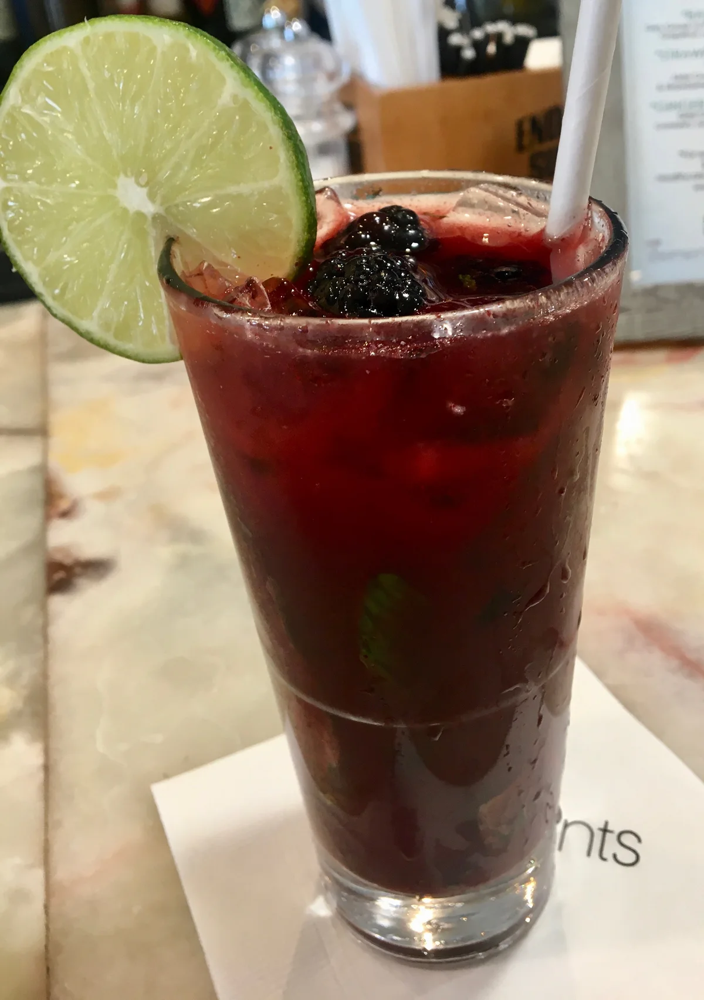

47 Homemade Recipes
Cooking.
A personal cookbook of the dishes and drinks I actually love making — from 15-minute starters to multi-day kitchen projects.
Explore by Course
All 47 recipes ›
What are you in the mood for?
Jump straight into a category, or open the full searchable cookbook.
 Bruschetta
Bruschetta
16 recipes
Tonkotsu Ramen
Appetizers
Fresh mozzarella, soup dumplings, breads, dips, and shareable starters.
18 recipes
Entrees
Tonkotsu ramen, birria tacos, smash burgers, and bold mains from scratch.
 Pumpkin Bread with Salted Maple Butter
Pumpkin Bread with Salted Maple Butter
10 recipes
Desserts
Laminated croissants, pumpkin bread, milk bread, and warm churros.

Yuzu Blackberry Caipiroska
3 recipes
Drinks
Craft cocktails, yuzu blackberry caipiroskas, and party batch coolers.
Featured Collection
Open full grid ›
What I Make
Swipe or click through below, filter by course, or search by ingredient.
No recipes matched your search.
Always Cooking
New recipes added as I dial them in.
Every dish here is tested in my own kitchen. Browse the full index or send over a dish you think I should tackle next.